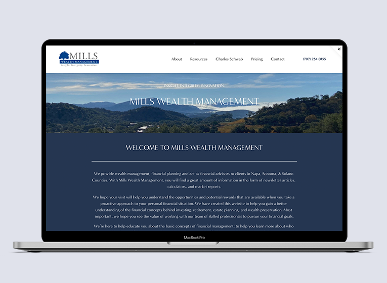
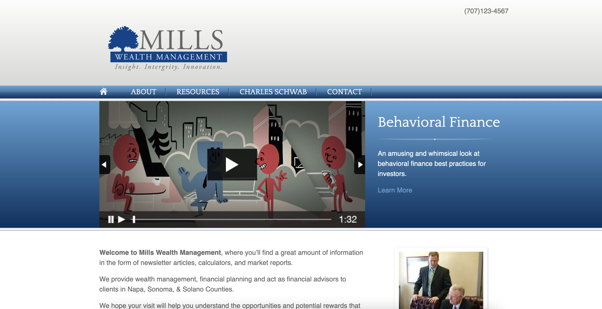
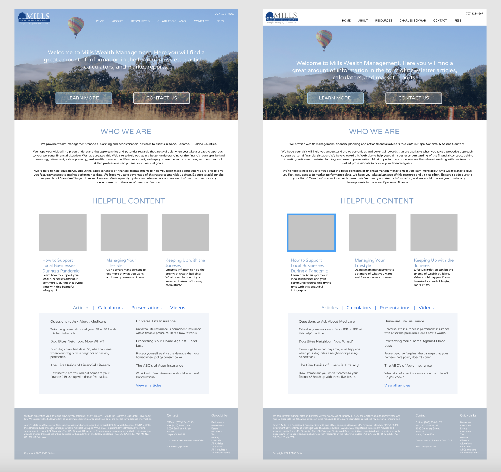
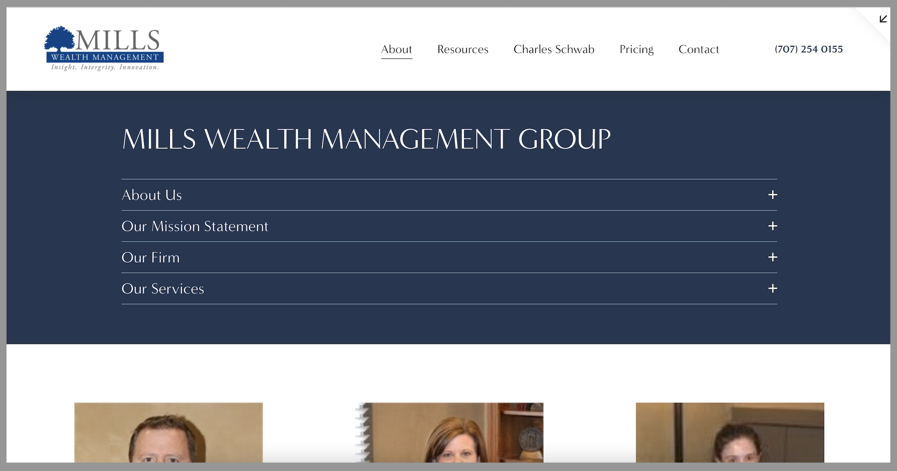

Mills Wealth Management Webpage Redesign
Mills Wealth Management is a family owned business for families and other individuals that are looking for help with finances and financial advice. I had the opportunity to take on this website and design a new version to help customers find what they are looking for and to be able to get the help they need.
Role: UX Designer
Company: Mills Wealth Management
Date Completed: March 2022
The Problem:
A family business started in then 1960’s, the Mills had created a simple website and haven’t had time to redesign it. I had the opportunity to help them and their family business to create a new look for their website.
Before:
Having their purpose in mind, I knew that their website was a big part of how people view them. Their clients need to know they can trust this family business with their finances.
Ideas:
I began on Miro, working with their colors to try to recreate their website into something that others will see and trust. There is plenty of information to work with, but it is important to be able to organize it in a way that is easy to navigate and understand, while also removing unneeded information.
I worked with this family to make sure the design was exactly how they wanted it, recreating their logo during this time as well so they have it on hand.
Through this process, I learned about other Financial Practices to be able to understand the industry and be able to match the feeling of those websites. I noticed they mostly use blue, a calming color, and have been designed to look very professional.